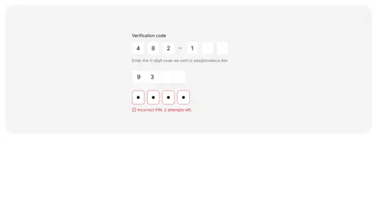
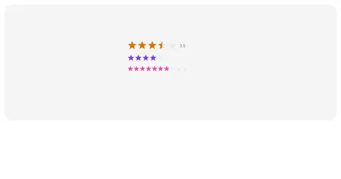
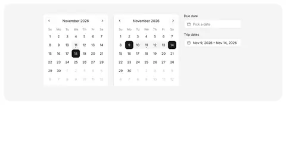
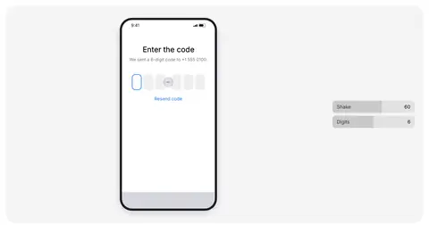
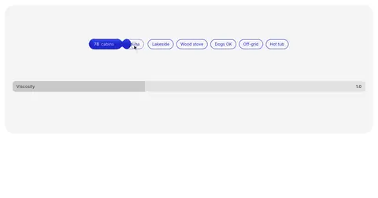
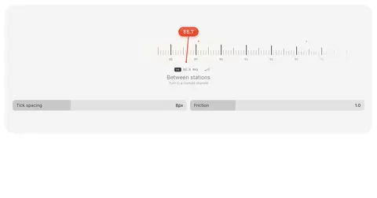
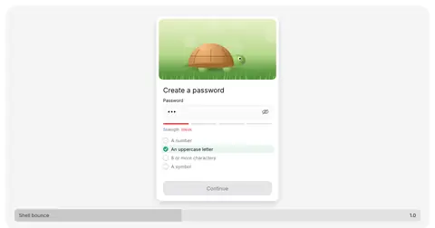
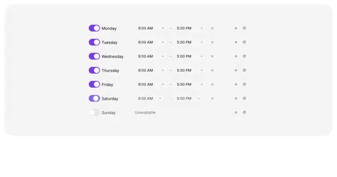
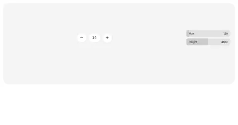

Animated form inputs for Rust apps
Form controls with motion: one-time-code inputs with autofill, ratings, color pickers, calendars, file dropzones, vanishing inputs, day/night switches and availability schedulers.
All Inputs & Forms components

OTP Input
Inputs & FormsOne-time-code boxes that fill as you type, auto-advance with a blinking caret and accept paste.

Rating
Inputs & FormsStar ratings with hover preview, half stars, springy hover and read-only display.

Color Picker
Inputs & FormsSaturation area, hue and alpha sliders, hex field and swatches; inline or as a popover.

Calendar & Date Picker
Inputs & FormsMonth grids with today, single and range selection and a sliding month transition; plus popover date pickers.

File Dropzone
Inputs & FormsA dashed drop area whose border marches while files hover, with an animated list of received files.

Placeholders & Vanish Input
Inputs & FormsAn input whose placeholder cycles through prompts; on Enter the text dissolves right-to-left into drifting particles.

Day / Night Switch
Inputs & FormsA sliding switch: sunny sky with clouds slides into a starry night as the sun knob turns into a cratered moon.

OTP Autofill
Inputs & FormsA one-time-code field: a keypad springs up with the incoming code, the digits pop in one by one, and a wrong code shakes itself clear.

Pour
Inputs & FormsA filter bar of liquid ink: tap a tag and the count pill pours into it, floods and swallows it while the count rolls; tap again and it drains, necks and snaps free.

Tuner
Inputs & FormsA ruler picker as an FM dial: fling the tick tape and it coasts onto a channel while digits roll in the needle, and preset stations lock in with a name.

Turtle Password
Inputs & FormsA password field watched by a clay tortoise: every rule you meet builds its shell up, from a rising dome to knobs, rim spikes and gold studs.

Availability Scheduler
Inputs & FormsWeekly hours with springy rows: switching a day off folds its pickers into Unavailable, extra ranges grow the row, and time pickers spring open in place.

Adaptive Stepper
Inputs & FormsA number stepper whose digits roll in the direction you count, whose pill grows with the digits, and whose dead button folds away at the ends of the range.